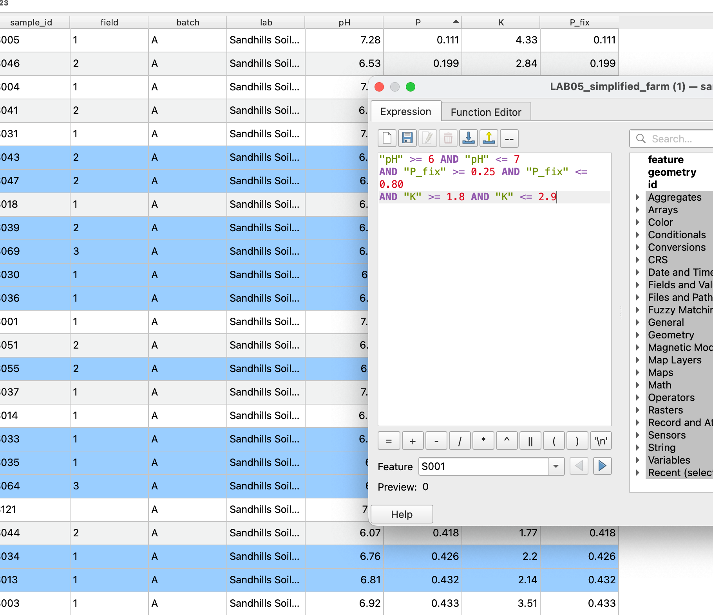
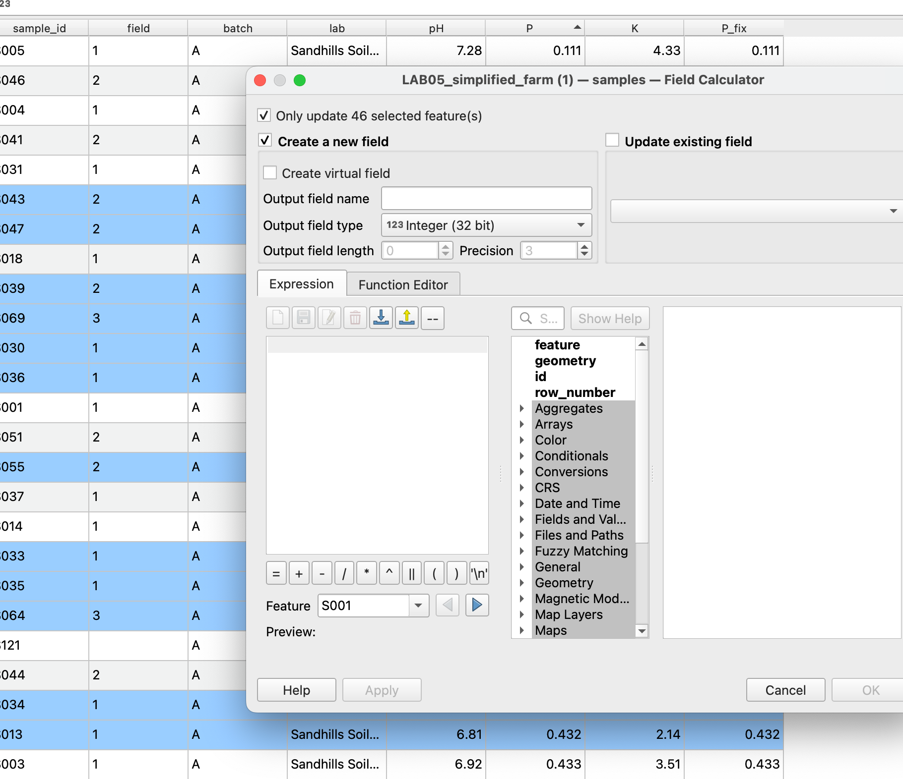
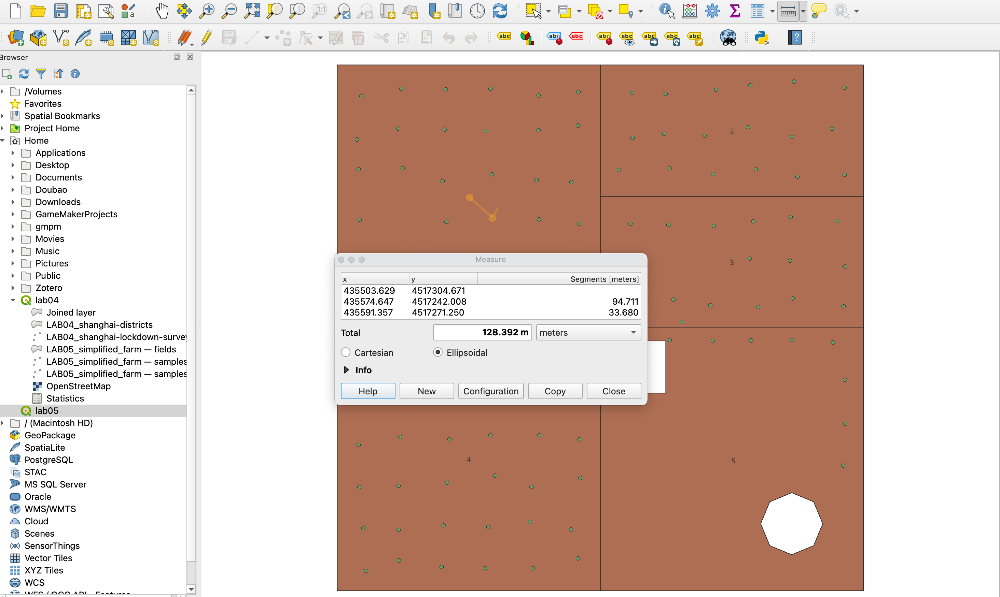
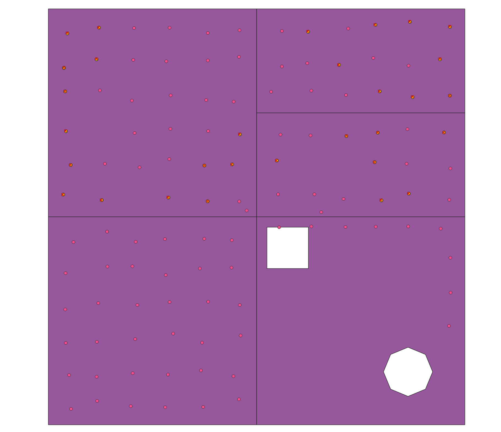
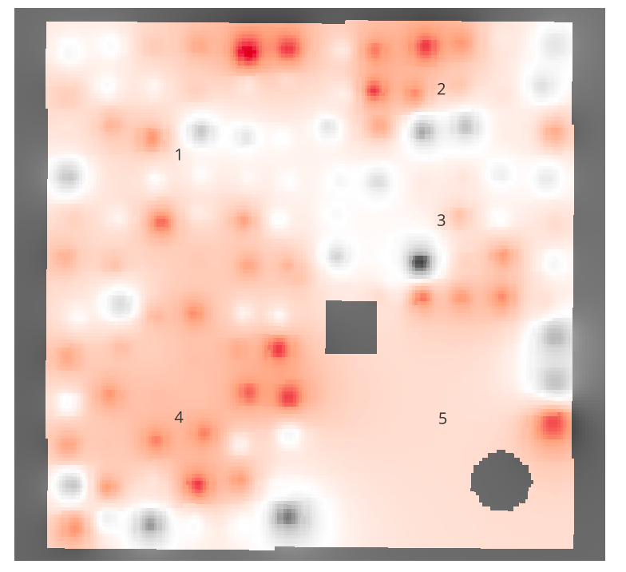

Lab 05 · November 2026
Lab 5 · Farming alfalfa and corn
What it is
A QGIS lab on a farm with five fields and 118 soil samples. I filtered the samples for corn, filled the gaps between them with IDW interpolation, and then checked my map against the answer key to see where it was wrong.
The data
Questions and Answers
Q1. Two different scales are hiding in the P column. Which rows use the bigger scale? Look at the batch, lab and field columns of those rows. Write one sentence.
For area measurement, the district layer was reprojected into four coordinate reference systems: EPSG:3857 (Web Mercator), EPSG:32651 (WGS 84 / UTM zone 51N), EPSG:4549 (CGCS2000 / 3-degree Gauss-Kruger, central meridian 120°E), and EPSG:4547 (central meridian 114°E). Planar areas were calculated using area($geometry) and compared with the ellipsoidal reference area.
The rows using the bigger (percentage) scale for P are Batch B, tested by Platte Valley Soil, and they come from Fields 4 and 5.
Q2. How many samples suit corn using P, and using P_fix? In which fields are the extra ones?
31 samples suit corn using the original P, and 46 using P_fix. The 15 extra samples are in Fields 4 and 5, where Batch B had reported phosphorus as percentages instead of decimals.
  Q3. Write both distances. You should get roughly 340 m for Field 5 and about 130 m for Field 1. Before you go on, write one sentence predicting where a map built from these samples will be least trustworthy.
The middle of Field 5 is about 340 m from its nearest sample; the furthest spot in Field 1 is about 130 m. I predicted the map would be least trustworthy in Field 5, far from any sample, because those estimates rest on few and distant measurements.

Q4. Does any of the three powers show a phosphorus problem (red) inside Field 5?
No. At powers 1, 2 and 4 the map marks only 0.0, 0.2 and 3.6 acres of Field 5 below the corn minimum of 0.25, so none of the three shows a real phosphorus problem there.
  The data The farm is synthetic, generated for the course, so the true soil values are known for every 10 m cell. The samples layer had P on two scales (Batch B in percent, the rest as decimals), which I fixed with the P_fix field.
The boundary layer has its own limitations. Its vertices are much more widely spaced than the nominal 30 m raster resolution might suggest: the reference analysis gives 3,443 vertices and a summed perimeter of approximately 2,066 km, equivalent to a mean segment length of roughly 600 m. A 30 m grid therefore cannot recover positional detail that the original vector data never contained.
When the map is about people, the people in the gaps pay. An air-quality map built from a few monitors smooths unmonitored neighbourhoods, often poorer ones far from the monitors, toward the average of the places that are measured. They look clean on the map, so they may miss warnings and funding. The surface looks equally confident everywhere, so the gaps are invisible.
Map
Visual channel
What it makes easy to see
What it hides or distorts
What I found
Reflection